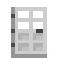

Server racks: pages
Server racks
Server Rack
The 42U Server Rack - placing it, its doors, where cables and power connect, lanes and priorities, the unit popup, the rack screen, and breaking it safely.
On this page
The  Server Rack is a 42U enclosed rack: one block wide, three tall and two deep. It holds rack devices stacked from U1 at the bottom to U42 at the top, behind a front door and a pair of rear doors. To the network the whole rack is one device: cable it in, power the network, and every device inside can work.
Server Rack is a 42U enclosed rack: one block wide, three tall and two deep. It holds rack devices stacked from U1 at the bottom to U42 at the top, behind a front door and a pair of rear doors. To the network the whole rack is one device: cable it in, power the network, and every device inside can work.

encodedlogistics:server_rack
Placing and breaking#
Place it like any block. The space it goes into becomes the bottom of the rack's front column, the front faces you, and the rest of the rack goes up and back from there. It needs all six spaces free. If any is taken, nothing is placed and the action bar tells you.
Breaking any of its six blocks breaks the whole rack. The rack drops as one item, and every device in it drops too, each with its settings and contents (drives in a NAS, tapes in a library, cards in a chassis). Because that is a lot to lose by accident, a rack is guarded:
- Break confirmation (
rack.rackBreakConfirm(default true)): a single stray click doesn't mine it. Either sneak while you break it, or left-click it twice within a second. The first click arms it, with the message "Left-click the rack again to break it, or sneak while breaking", and mining makes no progress until the second click. Once confirmed it stays confirmed for 30 seconds while you mine it. In creative mode, the first break arms it and the second breaks it. - Break protection (
rack.rackBreakProtection(default true)): on a network with a Firewall, breaking a rack needs the Rack access permission as well as Build. See Firewall and security.
A rack has no inventory that hoppers or pipes can reach, so nothing can pull devices or drives out of it.
The doors#
| Do | Result |
|---|---|
| Right-click the front | Opens or closes the front door |
| Right-click the back | Opens or closes both rear doors |
| Sneak-right-click the front | Opens the rack screen, door open or closed |
The doors swing open over half a second. All three need Rack access on the rack's network. Without it the door stays shut, the latch rattles, and the action bar says "Access denied: SYSNAME Firewall".
With the front door open you can work on the devices directly:
- Install a device: use a rack device item on the open front, aimed at the unit where you want it. It goes in there if its units are free.
- Use a device: right-click it (a Rack Console's drawer, for instance), or use an item on it (a Link Card on a switch or Router, a card on a chassis bay). An item that the device you're aiming at doesn't want is offered to the rack's other devices: a Handheld Terminal used anywhere on a rack links to its Wireless Controller.
With both doors shut, the devices inside aren't drawn from further away than rack.rackCullDistance (default 24) blocks, which keeps big server rooms quick to render.
Screenshot needed
One Server Rack, front door swung open, with a Firewall, an L2 Switch, a Router, a Compute Server, a NAS with drives and a UPS installed; lights on
docs/site-src/images/racks/server-rack-front.png · 1600x900
Connecting it to the network#
Cables join a rack at seven connection points: the four grommets in its roof and its plinth, and the three blocks of its back face.
| Point | Where |
|---|---|
| Top front, top rear | On top of the two top blocks |
| Bottom front, bottom rear | Under the two bottom blocks |
| Rear top, rear middle, rear bottom | On the back face of the three back blocks |
The front and sides don't connect. A rack's blocks pass lanes through to each other, so a cable into the bottom and another out of the top carry the network on through the rack to whatever is beyond.
One network per rack. A rack keeps the first network it joined. A cable from a different network at one of its points is a mismatch: it carries nothing, no lanes and no power, and the rack's popup shows it as degraded. Use a Router to move items between networks, not a shared rack.
A rack holding its own rack Network Controllers is the network's core itself: its connection points carry the network out to everything else.
Power#
Each device drains its own FE/t from the network's energy, listed with each device on Rack devices. The rack itself drains nothing.
You can also feed power straight into a rack: any mod's FE cable at a connection point puts its FE into the network's energy, as a Power Inlet does. All the rack's points together take up to rack.rackPowerMaxInput (default -1) FE/t; the default of -1 means "the same as power.inletMaxInput". A mismatched point takes nothing.
A UPS in the rack keeps the network running through a power cut.
Lanes and priority#
The rack draws lanes from the network for its devices. Most devices need one lane each; some need none (the rack Network Controllers), and an L2 or L3 Switch in the rack pools lanes for the others so that the network only carries the switch's own uplink. The per-device numbers are on Rack devices.
When the network can't spare enough lanes, the rack drops devices one at a time, by lane priority:
- Each device has a priority: High, Normal or Low. Network Controllers, UPSes and switches start at High; everything else at Normal.
- Change it with the priority button in the device's panel header (in the rack screen). A changed priority stays with the device's item when you take it out.
- High-priority devices get their lanes first. Within a priority, the higher a device sits in the rack the earlier it is served, so the lowest units are shed first.
A device that is shed shows offline, and the rack's popup header turns amber with "Degraded".
The unit popup#
With a door open, look at a device and a popup appears next to the crosshair: the device's icon, name, height, a status dot and text, and its own lines (lanes, charge, clients, drives - whatever that device reports), some with bars. The device you are looking at is outlined instead of the block, and on a chassis the card or blade under the crosshair is outlined and gets its own popup. An empty unit just says it's empty.
Above every popup is the rack's header: its lanes over its working uplinks and how many uplinks there are. It turns amber and reads "Degraded" while a device is shed, an uplink is down, or a connection point is mismatched.
The popup doesn't show with the doors shut, with the HUD hidden (F1), or while a screen is open. Jade's own tooltip is turned off for racks so the two don't overlap.
Screenshot needed
Looking through an open front door at a UPS on battery: the outline around it, the popup with its name, status 'On battery', charge and load bars, and the rack header strip above
docs/site-src/images/racks/rack-hud.png · 1600x900
Device states#
| Status | Light | Meaning |
|---|---|---|
| Online | Green | Working |
| Warning | Amber | Working but needs attention: a UPS on battery, a controller failing over, a chassis short of redundancy |
| Fault | Red | Not working because of a problem it names: a SAN with no uplink, a second Firewall, a Wireless Controller with clients and no Access Points |
| Offline | Dark | No power, no lane, or no network |
The rack screen#
Sneak-right-click the front of a rack to open its screen.
Screenshot needed
The rack screen with the elevation of a well-filled rack (U numbers down the side, devices drawn with their fronts) and the inventory below; a device item held on the cursor over a free unit with the amber drop target
docs/site-src/images/racks/rack-screen.png · 1280x720
The elevation shows the rack's units, U42 at the top and U1 at the bottom, at least 16 at a time (more if the window is tall enough), with a scrollbar. Each device is drawn with its real front.
| Do | Result |
|---|---|
| Click a device | Opens its settings panel in the top half (a back button returns to the elevation) |
| Shift-click a device | Takes it out into your inventory, with its settings and contents |
| Click a free unit while holding a device | Installs it there. The drop target is amber where it fits, red where it doesn't |
| Shift-click a device in your inventory | Installs it at the lowest unit it fits |
| Hover a device | Shows the same popup as looking at it in the world |
Settings panels. Each device with settings has a panel; they're described with each device on Rack devices. Devices with item slots (drive bays, transceiver cages, schematic slots) show them as real slots in the panel. A device without settings (the Rack Consoles, the rack Optical Amplifier) shows only its name and status.
Opening the screen, installing, removing and changing settings all need Rack access. Some settings (routing, ACLs, VLAN ports, the Firewall's own rules) need Build too; those are noted where they're described.
Settings go with the device#
When you take a device out of a rack, its item keeps its settings, its lane priority (if you changed it) and its device name. Put it in another rack and it carries on as it was. A Rack Elevation can record and reapply settings for a whole rack.
Device names#
Every device gets a name the Terminal OS knows it by, the first time it's on a network: its type code and the lowest free two-digit number, such as UPS01 or CMPSRV02. Names are handed out rack by rack, each rack from its lowest unit up. The name is stored with the device, so it follows it from rack to rack, and a device moved to another network keeps its name if it's free there. Rename a device with RNMDEV or option 2 on Work with Devices. The type codes are in the device catalogue and the device type reference.